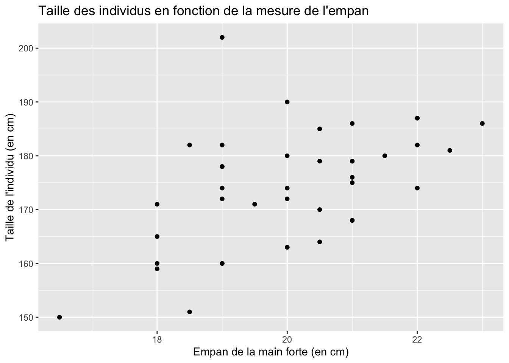
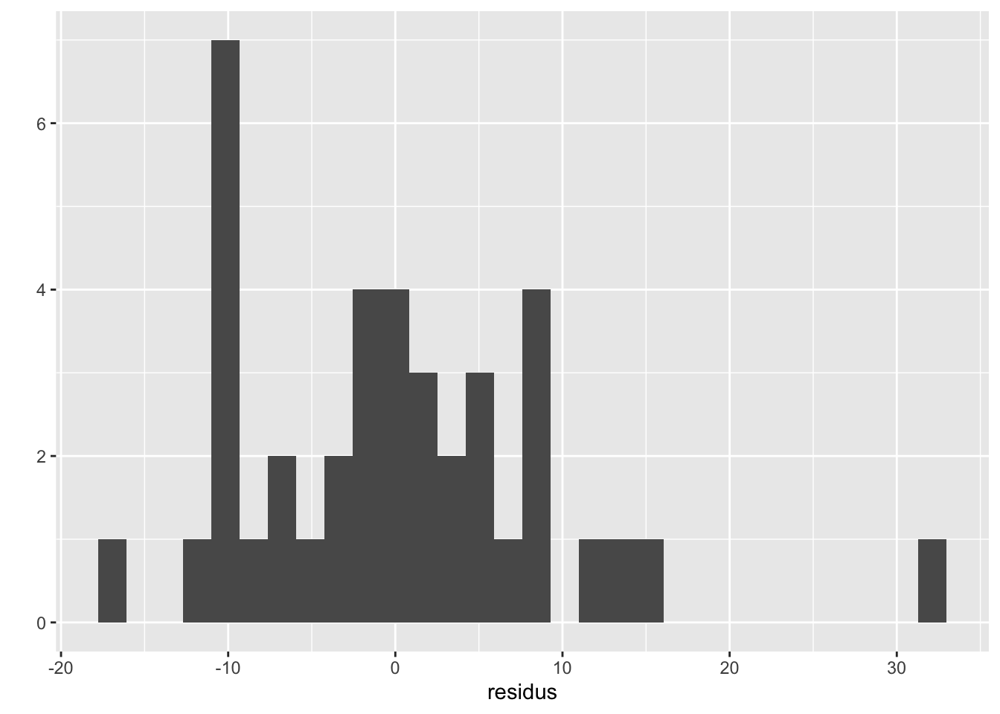

8 Régressions linéaires
Pour aborder sereinement ce chapitre, il est utile de savoir manipuler des vecteurs, des matrices et des tableaux de données.
Des compléments de lecture sont disponibles dans le chapitre des notes de cours concernant la régression linéaire avec R.
8.1 Contexte et rappels
Dans ce chapitre, nous allons utiliser R pour estimer la relation entre une variable à expliquer et une ou plusieurs autres variables. Nous effectuerons quelques rappels d’économétrie, puis effectuerons les calculs à la main dans un premier temps. Ensuite, nous utiliserons des routines permettant d’estimer des modèles de régression linéaire et nous attacherons à expliquer comment lire et extraire les résultats obtenus.
Pour illustrer notre propos, nous tâcherons de relier la mesure de la taille de l’empan à la taille d’un humain. L’empan correspond à la distance entre l’extrêmité du pouce et celle de l’auriculaire, comme illustré sur la Figure 8.1.
En notant \(y_i\) la taille de l’individu \(i\), et \(x\) son empan, il s’agit de regarder si la taille dépend linéairement de l’empan. On pose alors, pour tous les individus \(i = 1, \\ldots, n\):
\[y_i = \beta_0 x_i + \beta_1 + \varepsilon_i,\] avec \(\mathbb{E}(\varepsilon_i) = 0, \quad \forall i \in 1,\ldots, n\), \(\mathbb{E}(\varepsilon_i \varepsilon_j) = 0, \forall i \ne j\), et \(\mathbb{V}(\varepsilon_i) = \sigma^2_{\varepsilon}, \quad \forall i = 1, \ldots, n.\)
En termes matriciels, on peut noter : \[\boldsymbol y = \boldsymbol X \boldsymbol \beta + \boldsymbol \varepsilon,\] avec \(\boldsymbol \varepsilon \sim \mathcal{N}(0, \Sigma^2)\), et \[\begin{align*} \textrm{où } \boldsymbol y = \begin{bmatrix} y_1 \\ y_2 \\ \vdots \\ y_n \end{bmatrix}, \, \boldsymbol X = \begin{bmatrix} 1 & x_{1,1} \\ 1 & x_{1,2} \\ 1 & \vdots \\ 1 & x_{1,n} \end{bmatrix}, \, \boldsymbol \beta = \begin{bmatrix} \beta_0\\ \beta_1\\ \end{bmatrix} \textrm{ et } \boldsymbol \varepsilon = \begin{bmatrix} \varepsilon_1\\ \varepsilon_2\\ \vdots\\ \varepsilon_n \end{bmatrix}. \end{align*}\]
La méthode des moindres carrés ordinaires (MCO) propose une estimation \((\hat\alpha, \hat\beta)\) telle que la somme des carrés des résidus soit minimisée: \[\arg \min_{\boldsymbol \beta}\mid \mid \boldsymbol y - \boldsymbol X \boldsymbol \beta \mid \mid^2 = \arg \min_{\boldsymbol \beta} \sum_{i=1}^{n} (y_i - x_i \beta)^2.\]
Les résidus correspondent à l’écart entre la valeur observée de la taille \(y_i\) et celle prédite par le modèle \(\hat y_i\) : \(e_i = y_i - \hat y_i\).
Le modèle estimé s’écrit :
\[\hat{y_i} = \hat{\beta_0} + \hat{\beta_1} x_i,\] soit, en termes matriciels: \[\hat{\boldsymbol y} = \boldsymbol X \hat{\boldsymbol \beta},\] \[\begin{align*} \textrm{où } \hat{\boldsymbol y} = \begin{bmatrix} \hat{y}_1 \\ \hat{y}_2 \\ \vdots \\ \hat{y}_n \end{bmatrix}, \, \boldsymbol X = \begin{bmatrix} 1 & x_{1,1} \\ 1 & x_{1,2} \\ 1 & \vdots \\ 1 & x_{1,n} \end{bmatrix}, \textrm{ et } \hat{\boldsymbol \beta} = \begin{bmatrix} \hat{\beta}_0\\ \hat{\beta}_1\\ \end{bmatrix}. \end{align*}\]
La condition du premier ordre donne3 :
\[\begin{align*} & \boldsymbol X^t \boldsymbol X\hat{\boldsymbol \beta} - 2 \boldsymbol X^t \boldsymbol X \hat{\boldsymbol \beta} - 2 \boldsymbol X^t \boldsymbol y = 0\notag\\ \Leftrightarrow \quad & \boldsymbol X^t \boldsymbol X \hat{\boldsymbol\beta} = \boldsymbol X^t \boldsymbol y\notag\\ \Leftrightarrow \quad & \hat{\boldsymbol\beta} = (\boldsymbol X^t \boldsymbol X)^{-1} \boldsymbol X^t \boldsymbol y. \end{align*}\]
8.2 Chargement du jeu de données
Créez un projet RStudio pour ce chapitre (cf. le chapitre d’initiation à R). Pensez bien à créer le répertoire Data dans le répertoire contenant le fichier de projet .Rproj.
Les données ont été mesurées sur des étudiantes et étudiants de l’Université de Rennes 1. Elles sont disponibles dans un fichier CSV à l’adresse suivante : https://egallic.fr/Enseignement/L3_EcoFi/Exercices/empan.csv. Téléchargeons ces données et enregistrons le fichier dans le répertoire Data :
download.file("https://egallic.fr/Enseignement/L3_EcoFi/Exercices/empan.csv",
destfile = "Data/empan.csv")Puis, chargeons-le dans R :
## # A tibble: 40 × 6
## empan_main_forte empan_main_faible age genre taille forte
## <dbl> <dbl> <dbl> <chr> <dbl> <chr>
## 1 19 19 19 H 172 D
## 2 20.5 20.5 27 H 179 G
## 3 21 21 26 H 179 G
## 4 19 19 27 F 160 D
## 5 21 22 25 H 186 D
## 6 19 18.5 25 H 178 D
## 7 19 19 20 H 182 B
## 8 21 22 21 H 179 D
## 9 23 22 19 H 186 D
## 10 20 20 20 F 163 D
## # ℹ 30 more rowsLes colonnes sont les suivantes (les caractéristiques des individus) :
empan_main_forte: empan main forte (en cm)empan_main_faible: empan main faible (en cm)age: age (en année)genre: genre (H, F, A)taille: taille (en cm)forte: main forte (“G” pour gauche, “D” pour droite, “B” pour ambidextre)
- Affichez quelques statistiques descriptives pour vous familiariser avec les données (moyenne, écart-type, quantiles, proportions, etc.). Vous pouvez, par exemple utiliser la fonction
tbl_summary()de {gtsummary} abordée au chapitre de statistiques descriptives. - Calculez la corrélation entre la taille de l’empan de la main forte et la taille des individus.
8.3 Régression pas à pas
Dans cette partie, nous allons effectuer quelques opérations “à la main”. Nous allons créer avec R tous les objets nécessaires pour pouvoir estimer par la méthode des moindres carrés les coefficient de la régression. Ensuite, nous regarderons comment réaliser des tests d’hypothèse de nullité des coefficients. La section suivante permettra de retrouver les mêmes résultats à l’aide de routines.
Nous verrons dans un autre chapitre comment réaliser des graphiques avec le package {ggplot2}. Pour réaliser des nuages de points facilement, nous pouvons utiliser la fonction qplot() de ce package. Le tableau de données contenant les observations à afficher est indiqué à l’argument data=. Les arguments x= et y= reçoivent le nom des colonnes du tableau à utiliser pour l’axe des abscisses et des ordonnées, respectivement. L’argument geom= définit le type de géométrie à représenter. Dans l’exemple ci-dessous, nous souhaitons réaliser un nuage de points. Nous indiquerons donc geom = point. Une fois le nuage créé, nous ajoutons une couche au graphique, pour nommer les axes et le graphique, avec la fonction labs().
library(ggplot2)
qplot(x = empan_main_forte, y = taille,
data = df_empan, geom = "point") +
labs(x = "Empan de la main forte (en cm)",
y = "Taille de l'individu (en cm)",
title = "Taille des individus en fonction de la mesure de l'empan")
8.3.1 Estimation des coefficients de la régression par moindres carrés ordinaires
Comme indiqué précédemment, nous souhaitons estimer la relation suivante : \[\boldsymbol y = \boldsymbol X \boldsymbol \beta + \boldsymbol \varepsilon,\]
où \(\boldsymbol y\) est un vecteur contenant les tailles des individus, \(\boldsymbol X\) une matrice contenant deux colonne : une pour la constante et une deuxième pour les valeurs de l’empan de la main forte. Nous allons estimer les valeurs des deux coefficients du vecteur \(\boldsymbol \beta\) (celui pour la constante, et celui pour l’empan de la main forte).
- Dans un objet que vous appellerez
n, stockez le nombre d’observations dans le tableau de donnéesdf. - Créez un vecteur que vous nommerez
constante. Cet objet doit contenir la valeur1répétéenfois. - Créez un vecteur que vous nommerez
y. Cet objet doit contenir les valeurs la colonnetailledu tableaudf_empan. Cet objet sera notre variable de réponse, celle que nous souhaitons pouvoir prédire à l’aide du modèle de régression linéaire. Les premières valeurs deyseront comme suit :
## [1] 172 179 179 160 186 178- Créez une matrice que vous nommerez
X, qui contiendra deux colonnes : une première contenant les valeurs deconstante, et une deuxième contenant les valeurs de la colonneempan_main_fortededf. Les premières valeurs deXseront comme suit :
## [,1] [,2]
## [1,] 1 19.0
## [2,] 1 20.5
## [3,] 1 21.0
## [4,] 1 19.0
## [5,] 1 21.0
## [6,] 1 19.0Avec la méthode des moindres carrés, les coefficients de la régression sont estimé en effectuant le calcul suivant : \[\hat{\boldsymbol\beta} = (\boldsymbol X^t \boldsymbol X)^{-1} \boldsymbol X^t \boldsymbol y.\]
- Calculez la transposée de
X, c’est-à-dire \(\boldsymbol X^t\). - Calculez, à l’aide d’un produit matriciel, la matrice \(\boldsymbol X^t \boldsymbol X\)
- Calculez l’inverse de la matrice de la fonction précédente, c’est-à-dire \(\left(\boldsymbol X^t \boldsymbol X\right)^{-1}\)
- Calculez le vecteur colonne \(\boldsymbol X^t \boldsymbol y\)
- Calculez le vecteur des coefficients de régression par la méthode des moindres carrés ordinaires, c’est-à-dire \(\hat{\boldsymbol\beta} = \left(\boldsymbol X^t \boldsymbol X\right)^{-1} \boldsymbol X^t \boldsymbol y\). Stockez le résultat dans un objet que vous nommerez
hat_beta. - Avec les crochets, extrayez chaque coefficient de
hat_beta(le coefficient associé à la constane – i.e., la pente ici – et le coefficient associé à la taille de l’empan). Vous devez obtenir les valeurs suivantes :
## Constante## [1] 96.27554## Coeff empan## [1] 3.885117Note : lors de la séance portant sur les matrices, vous avez déjà appris à effectuer toutes ces opérations.
8.3.2 Prédiction des valeurs
Une fois que nous avons obtenu les coefficients de la régression, nous pouvons les réutiliser pour calculer les valeurs prédites par le modèle, à savoir \(\hat{\boldsymbol y}\). Il suffit pour cela d’appliquer la formule :
\[\hat{\boldsymbol y} = \boldsymbol X \boldsymbol{\hat{\beta}}.\]
- Calculez les valeurs prédites, c’est-à-dire \(\hat{\boldsymbol y} = \boldsymbol X \hat{\boldsymbol\beta}\). Stockez les valeurs dans un objet que vous nommerez
y_pred. Les premières valeurs sont les suivantes :
## [,1]
## [1,] 170.0928
## [2,] 175.9204
## [3,] 177.8630
## [4,] 170.0928
## [5,] 177.8630
## [6,] 170.09288.3.3 Les résidus de la régression
Les résidus correspondent à la différence entre les valeurs observées et les valeurs prédites, soit \(e = \boldsymbol y - \boldsymbol{X}\hat{\boldsymbol\beta}\).
- Calculez les résidus \(e = \boldsymbol y - \boldsymbol{X}\hat{\boldsymbol\beta}\). Stockez le résultat dans un objet que vous nommerez
residus. Les premières valeurs sont les suivantes :
## [,1]
## [1,] 1.907245
## [2,] 3.079570
## [3,] 1.137011
## [4,] -10.092755
## [5,] 8.137011
## [6,] 7.907245Nous pouvons regarder la distribution des résidus, pour voir s’ils ont une allure normale (ici, nous avons peu d’observations…) :

8.3.4 Un indicateur de la qualité d’ajustement : le coefficient de détermination
Pour avoir une idée de la qualité d’ajustement du modèle, il est coutume de calculer le coefficient de détermination, le \(R^2\). Nous pouvons au préalable calculer la somme des carrés des écarts expliqués ainsi que la somme des carrés totale.
La variance peut se décomposer en deux termes : une part expliquée par le modèle et une part inexpliquée :
\[\underbrace{(y_i - \bar{y})}_{\text{Ecart total}} = \underbrace{(\hat{y}_i - \bar{y})}_{\text{Écart expliqué}} + \underbrace{(y_i - \hat{y}_i)}_{\text{Écart résiduel}},\] avec \(\overline y = \frac{1}{n}\sum_{i=1}^{n} y_i\) la moyenne de\(y\).
On peut montrer que :
\[\underbrace{\sum_{i=1}^{n}(y_i - \bar{y})^2}_{\text{SCT}} = \underbrace{\sum_{i=1}^{n}(\hat{y}_i - \bar{y})^2}_{\text{SCE}} + \underbrace{\sum_{i=1}^{n}(y_i - \hat{y}_i)^2}_{\text{SCR}},\] avec :
- \(\text{SCT}\) : la somme des carrés totale
- \(\text{SCE}\) : la somme des carrés des écarts expliqués par le modèle
- \(\text{SCR}\) : la somme des carrés des résidus
- Calculez la somme des carrés des résidus, c’est-à-dire \(\text{SCR} = \sum_{i=1}^{n} \left( y_i - \hat{y_i}\right)^2\). Stockez le résultat dans un objet que vous nommerez
somme_carre_residus. Vous obtiendrez :
## [1] 3421.886- Calculez \(\text{SCT}\) et \(\text{SCE}\) et stockez les valeurs dans des objets que vous nommerez
somme_carres_totaleetsomme_carres_expliques, respectivement. Vous obtiendrez :
## Somme des carrés totale :## [1] 4666.775## Somme des carrés expliqués :## [1] 1244.889- Calculez le coefficient de détermination : \(R^2 = \frac{\text{SCE}}{\text{SCT}}\). Vous obtiendrez :
8.3.5 Tests de nullité des coefficients de la régression linéaire
À présent, nous souhaitons pouvoir effectuer des tests de significativité des coefficients de la régression. Le test se présente sous la forme suivante : \[\begin{align*} \begin{cases} H_0 : \beta_i = 0\\ H_1 : \beta_i \ne 0 \end{cases}, i = 1, 2 \end{align*}\]
Ce test s’appuie sur la statistique de test suivante : \[\begin{align*} T = \frac{\hat{\beta}_i - \beta_{i,H_0}}{\hat{\sigma}_{\hat{\beta}_i}} \sim \mathcal{S}t(n-m-1), \end{align*}\] avec \(\beta_{i,H_0}\) la valeur de \(\beta_i\) sous l’hypothèse nulle, \(\hat{\sigma}_{\hat{\beta}_i}\) l’estimation de l’écart-type de l’estimation du paramètre \(\beta_i\).
Pour effectuer ce test bilatéral, on peut lire dans la table de la loi de Student deux fractiles tels que : \[\begin{align*} \mathbb{P}\left( -t_{1-\alpha/2} < \frac{\hat{\beta}_i - \alpha_{i,H_0}}{\hat{\sigma}_{\hat{\beta}_i}} < t_{1-\alpha/2} \right) = 1 - \alpha. \end{align*}\] avec \(\alpha\) le risque de première espèce (le risque de rejeter \(H_0\) alors qu’elle est vraie).
À partir des observations, il est possible de calculer : \[\begin{align*} t_{i,\textrm{obs.}} = \frac{\hat{\beta}_i}{\hat{\sigma}_{\hat{\beta}_i}}. \end{align*}\]
La règle de décision est la suivante :
- si \(t_{i,\textrm{obs.}} \in [-t_{1-\alpha/2}, t_{1-\alpha/2}]\), nous somme dans la région de non rejet, on ne rejette donc pas \(H_0\) au seuil \(\alpha\) (avec \(\alpha=5\%\), par exemple), et on considère alors que \(\beta_i\) n’est pas statistiquement différent de zéro ;
- si en revanche \(t_{i,\textrm{obs.}} \notin [-t_{1-\alpha/2}, t_{1-\alpha/2}]\), nous sommes dans la région critique et cette fois on rejette l’hypothèse nulle en faveur de l’hypothèse alternative. On considère alors qu’avec un risque de première espèce \(\alpha\), on a \(\alpha_i \ne 0\).
- Calculez la variance des erreurs \(\hat{\sigma}^2_\varepsilon = \frac{\text{SCR}}{n-m-1}\). Stockez le résultat dans un objet que vous nommerez
hat_sigma_2_u. Vous devez obtenir :
## [1] 90.04964- Calculez la matrice de variance-covariance des estimateurs \(\mathbb{V}\left(\hat{\boldsymbol\beta}\right) = \hat{\sigma}^2_\varepsilon \left(\boldsymbol X^t \boldsymbol X\right)^{-1}\). Stockez le résultat dans un objet que vous nommerez
var_cov. Vous obtiendrez la matrice suivante :
## [,1] [,2]
## [1,] 440.08045 -21.864130
## [2,] -21.86413 1.091842- Extrayez les éléments de la diagonale de la matrice de variance-covariance (les variances, donc), puis calculez leur racine carrée de manière à obtenir les erreurs-types \(\hat{\sigma}_{\hat{\boldsymbol\beta}}\). Stockez le résultat dans un vecteur que vous nommerez
hat_sigma_betas. Vous obtiendrez les valeurs suivantes :
## [1] 20.978094 1.044912- Pour chaque coefficient, calculez la statistique observée du test de nullité des coefficients \(t_{i,\textrm{obs.}} = \frac{\hat{\beta}_i}{\hat{\sigma}_{\hat{\beta}_i}}\). Stockez le résultat dans un vecteur que vous nommerez
t_obs. Vous obtiendrez les valeurs suivantes :
## [,1]
## [1,] 4.589337
## [2,] 3.718127- À l’aide de la fonction
qt(), stockez dans un objet que vous nommerezt_table quantile d’ordre 95% d’une Student àn-m-1degrés de libertés. Vous obtiendrez la valeur suivante :
## [1] 2.024394Comparez les valeurs de
t_obsavec celles det_tab. Concluez pour chaque coefficient.À l’aide de la fonction
pt(), calculez la p-value associée au test de nullité de chaque coefficient (rappel : nous effectuons un test bilatéral ici, donc nous cherchons \(2 \times \mathbb{P}(\vert T \vert > t_{obs})\)). Vous obtiendrea les valeurs suivantes :
## [,1]
## [1,] 4.745605e-05
## [2,] 6.453478e-048.4 Régression avec lm
La fonction permettant de réaliser une régression linéaire avec R se nomme lm(). Il est nécessaire de fournir une formule à l’arguemnt formula=. L’argument data= indique le tableau de données dans lequel les variables mentionnées dans la formule se trouvent.
Pour écrire la formule, on indique le nom de la variable à expliquer, puis, après avoir ajouté un tilde (~), on écrit le nom des variables explicatives en les séparant par un symbole plus (+). Par défaut, la constante est ajoutée au modèle.
##
## Call:
## lm(formula = taille ~ empan_main_forte, data = df_empan)
##
## Coefficients:
## (Intercept) empan_main_forte
## 96.276 3.885Note
Pour estimer le modèle sans la constante, on ajoute dans le membre à droite du tilde : - 1 :
##
## Call:
## lm(formula = taille ~ -1 + empan_main_forte, data = df_empan)
##
## Coefficients:
## empan_main_forte
## 8.668Pour ajouter des variables explicatives, il suffit d’écrire leur nom en séparant chaque variables par le symbole plus (+) :
##
## Call:
## lm(formula = taille ~ empan_main_forte + genre, data = df_empan)
##
## Coefficients:
## (Intercept) empan_main_forte genreH
## 141.897 1.058 16.275L’objet retourné par la fonction lm() est de classe lm. Il s’agit d’une liste contenant plusieurs éléments nommés, dont :
coefficients: un vecteur nommé de coefficients (\(\hat{\boldsymbol\beta}\)) ; les noms correspondent aux noms des variables explicativesresiduals: les résidusfitted.values: les valeurs prédites par le modèle
On peut donc accéder à ces éléments avec les crochets, ou à leur contenu avec les doubles crochets (ou le dollar) :
## (Intercept) empan_main_forte
## 96.275538 3.885117## (Intercept) empan_main_forte
## 96.275538 3.885117On retrouve bien les mêmes valeurs que celles que nous avons calculées “à la main”. On note que le coefficient associé à la constante se nome (Intercept) (soit la pente de la droite de régression).
8.4.1 Résumé de l’estimation
La fonction summary() permet d’obtenir quelques résumés concernant l’estimation :
##
## Call:
## lm(formula = taille ~ empan_main_forte, data = df_empan)
##
## Residuals:
## Min 1Q Median 3Q Max
## -17.150 -7.343 0.108 5.252 31.907
##
## Coefficients:
## Estimate Std. Error t value Pr(>|t|)
## (Intercept) 96.276 20.978 4.589 4.75e-05 ***
## empan_main_forte 3.885 1.045 3.718 0.000645 ***
## ---
## Signif. codes: 0 '***' 0.001 '**' 0.01 '*' 0.05 '.' 0.1 ' ' 1
##
## Residual standard error: 9.489 on 38 degrees of freedom
## Multiple R-squared: 0.2668, Adjusted R-squared: 0.2475
## F-statistic: 13.82 on 1 and 38 DF, p-value: 0.0006453Les valeurs qui s’affichent sont accessibles (avec les crochets doubles ou le symbole dollar) :
## Estimate Std. Error t value Pr(>|t|)
## (Intercept) 96.275538 20.978094 4.589337 4.745605e-05
## empan_main_forte 3.885117 1.044912 3.718127 6.453478e-04Regardons d’un peu plus près les différents éléments de la sortie :
Call: la formule du modèle.Residuals: des statistiques descriptives des résidus.Coefficients: un tableau à deux entrées où les lignes correspondent aux coefficients associés aux variables explicatives, et les colonnes, dans l’ordre, à l’estimation du coefficient, l’écart-type estimé, la valeur du test de Student de nullité statistique du coefficient et enfin la p-value associé à ce test, suivie d’un symbole pour lire rapidement la significativité.Signif. codes: les significations des symboles de niveau de significativité.Residual standard error: estimation de l’écart-type de l’aléa et degré de liberté.Multiple R-squared: coefficient de détermination.Adjusted R-squared: coefficient de détermination ajusté.F-statistic: valeur de la statistique de Fisher du test de significativité globale, ainsi que les degrés de liberté et la p-value associée au test.
8.4.2 Prédictions des valeurs
Les valeurs prédites par le modèle sont dans l’élément fitted.values de l’objet retourné par lm().
## 1 2 3 4 5 6 7 8
## 170.0928 175.9204 177.8630 170.0928 177.8630 170.0928 170.0928 177.8630
## 9 10 11 12 13 14 15 16
## 185.6332 173.9779 170.0928 173.9779 173.9779 173.9779 166.2076 181.7481
## 17 18 19 20 21 22 23 24
## 183.6907 175.9204 168.1502 181.7481 170.0928 177.8630 173.9779 177.8630
## 25 26 27 28 29 30 31 32
## 173.9779 170.0928 177.8630 170.0928 168.1502 177.8630 181.7481 172.0353
## 33 34 35 36 37 38 39 40
## 181.7481 179.8055 175.9204 166.2076 166.2076 160.3800 175.9204 166.2076La fonction predict() peut aussi être appliquée à l’objet de régression (il s’agit d’un alias de la fonction predict.lm() ; pour afficher la fiche d’aide il faut écrire ?predict.lm()) :
## 1 2 3 4 5 6 7 8
## 170.0928 175.9204 177.8630 170.0928 177.8630 170.0928 170.0928 177.8630
## 9 10 11 12 13 14 15 16
## 185.6332 173.9779 170.0928 173.9779 173.9779 173.9779 166.2076 181.7481
## 17 18 19 20 21 22 23 24
## 183.6907 175.9204 168.1502 181.7481 170.0928 177.8630 173.9779 177.8630
## 25 26 27 28 29 30 31 32
## 173.9779 170.0928 177.8630 170.0928 168.1502 177.8630 181.7481 172.0353
## 33 34 35 36 37 38 39 40
## 181.7481 179.8055 175.9204 166.2076 166.2076 160.3800 175.9204 166.2076Cette fonction permet par ailleurs d’effectuer des prédictions pour de nouvelles valeurs, à condition de fournir un tableau de données contenant les colonnes utilisées comme variables explicatrices. Pour prédire la taille d’une personne, selon notre premier modèle, si la mesure de l’empan est de 15 cm :
## 1
## 154.5523Avec la régression de la taille sur l’empan de la main forte et le genre, si la mesure de l’empan est de 15 cm et que l’individu est un homme :
## 1
## 174.0465- À l’aide d’un mètre-ruban, mesurez la taille de votre empan. En utilsant le modèle estimé de votre choix, prédisez votre taille. Comparez avec la réalité.
Pour munir une prédiction d’un intervalle de confiance, on peut ajouter des arguments à la fonction predict(). Avec l’argument interval=, on choisit le type d’intervalle ("confidence" ou "prediction"), avec level= on choisir le niveau de confiance, et avec se.fit= on précise si l’on souhaite ou non que l’écart-type estimé soit retourné.
## $fit
## fit lwr upr
## 1 154.5523 132.3881 176.7165
##
## $se.fit
## [1] 5.460854
##
## $df
## [1] 38
##
## $residual.scale
## [1] 9.489449Dans l’élément fit, les valeurs sont les suivantes : fit pour la valeur prédite, lwr et upr les bornes inférieure et supérieure de l’intervalle de confiance de la prédiction (lwr pour lower et upr pour upper).
8.4.3 Tests de nullité des coefficients de la régression linéaire
L’élément appelé coefficients obtenu en application de la fonction summary() sur l’objet issu de la régression contient un tableau donnant pour chaque coefficient (en ligne), la valeur estimée (Estimate), l’écart-type de l’estimateur (Std. Error), la valeur observé de la statistique de Student du test de nullité du coefficient (Std. Error) et la p-value associée au test (Pr(>|t|)).
## Estimate Std. Error t value Pr(>|t|)
## (Intercept) 96.275538 20.978094 4.589337 4.745605e-05
## empan_main_forte 3.885117 1.044912 3.718127 6.453478e-048.4.4 Mise en forme des résultats avec modelsummary
Pour créer de jolis tableaux de statistiques descriptives, nous allons utiliser la fonction modelsummary() du package du même nom. Un tutoriel est disponible sur le site du créateur du package, Vincent Arel-Bundock. Nous allons ici explorer uniquement les rudiments de la fonction modelsummary().
Note
Nous avons vu dans le chapitre sur les résumés statistiques que nous pouvions utiliser une fonction du package {gtsummary}. Pour des tableaux présentant les tableaux de régression, bien que {gtsummary} propose une fonction nommée tbl_regression(), nous préférons utiliser ici le package {modelsummary}. Pour celles et ceux qui voudraient apprendre à utiliser tbl_regression(), une bonne vignette facile d’accès est disponible sur le site de Daniel D. Sjoberg, le créateur du package.
Dans un premier temps, nous allons charger le package {modelsummary} :
L’argument models= de la fonction modelsummary() reçoit un objet issu d’une régression (ou une liste d’objets issus de régressions si l’on souhaite afficher plusieurs estimateurs provenant de plusieurs modèles). En fournissant les objets issus d’une régression dans une liste nommée, les noms que l’on donne sont ensuite utilisés en en-tête.
| MCO 1 | MCO 2 | MCO 3 | |
|---|---|---|---|
| (Intercept) | 96.276 | 141.897 | |
| (20.978) | (17.069) | ||
| empan_main_forte | 3.885 | 8.668 | 1.058 |
| (1.045) | (0.092) | (0.896) | |
| genreH | 16.275 | ||
| (2.748) | |||
| Num.Obs. | 40 | 40 | 40 |
| R2 | 0.267 | 0.996 | 0.624 |
| R2 Adj. | 0.247 | 0.996 | 0.603 |
| AIC | 297.5 | 313.1 | 272.8 |
| BIC | 302.5 | 316.5 | 279.6 |
| Log.Lik. | −145.739 | −154.559 | −132.403 |
| F | 13.824 | 30.649 | |
| RMSE | 9.25 | 11.53 | 6.63 |
Le tableau ainsi créé retourne les coefficients estimés et leur écart-type pour chaque modèle, suivis de du nombre d’observations et de quelques statistiques de qualité d’ajustement des modèles (R\(^2\), R\(^2\) ajusté, AIC, BIC, log vraisemblance, F de Fisher, racine de l’erreur quadratique moyenne).
Lorsque nous affichons le résumé d’une régression avec la fonction summary(), le nombre de décimales des coefficients peut s’avérer plus grand que nécessaire pour la communication des résultats. L’argument fmt= permet de déterminer comment formater les valeurs numériques du tableau. Si l’on souhaite par exemple ne faire figurer que 2 décimales, on peut écrire :
| MCO 1 | MCO 2 | MCO 3 | |
|---|---|---|---|
| (Intercept) | 96.28 | 141.90 | |
| (20.98) | (17.07) | ||
| empan_main_forte | 3.89 | 8.67 | 1.06 |
| (1.04) | (0.09) | (0.90) | |
| genreH | 16.28 | ||
| (2.75) | |||
| Num.Obs. | 40 | 40 | 40 |
| R2 | 0.267 | 0.996 | 0.624 |
| R2 Adj. | 0.247 | 0.996 | 0.603 |
| AIC | 297.5 | 313.1 | 272.8 |
| BIC | 302.5 | 316.5 | 279.6 |
| Log.Lik. | −145.739 | −154.559 | −132.403 |
| F | 13.824 | 30.649 | |
| RMSE | 9.25 | 11.53 | 6.63 |
Nous pouvons aussi utiliser une fonction pour formater les nombres, ce qui peut s’avérer utile pour produire un tableau avec des normes françaises (virgule utilisée comme séparateur décimal, espace comme sépartateur de milliers).
| MCO 1 | MCO 2 | MCO 3 | |
|---|---|---|---|
| (Intercept) | 96,28 | 141,90 | |
| (20,98) | (17,07) | ||
| empan_main_forte | 3,89 | 8,67 | 1,06 |
| (1,04) | (0,09) | (0,90) | |
| genreH | 16,28 | ||
| (2,75) | |||
| Num.Obs. | 40 | 40 | 40 |
| R2 | 0.267 | 0.996 | 0.624 |
| R2 Adj. | 0.247 | 0.996 | 0.603 |
| AIC | 297.5 | 313.1 | 272.8 |
| BIC | 302.5 | 316.5 | 279.6 |
| Log.Lik. | −145.739 | −154.559 | −132.403 |
| F | 13.824 | 30.649 | |
| RMSE | 9.25 | 11.53 | 6.63 |
Note
On remarque que les statistiques en bas du tableau ne sont pas affectées par l’argument fmt=. Nous verrons plus bas comment changer le format de ces statistiques.
Pour faire figurer une indication visuelle permettant de savoir rapidement le seuil de significativité du test de nullité des coefficients, la fonction modelsummary() accepte un argument star=. Les symboles retenus sont les suivants : + pour un seuil de 10%, * pour un seuil de 5%, ** pour un seuil de 1%, *** pour un seuil de 0,1%. La légende est ajoutée en note de bas de tableau.
| MCO 1 | MCO 2 | MCO 3 | |
|---|---|---|---|
| (Intercept) | 96.276*** | 141.897*** | |
| (20.978) | (17.069) | ||
| empan_main_forte | 3.885*** | 8.668*** | 1.058 |
| (1.045) | (0.092) | (0.896) | |
| genreH | 16.275*** | ||
| (2.748) | |||
| Num.Obs. | 40 | 40 | 40 |
| R2 | 0.267 | 0.996 | 0.624 |
| R2 Adj. | 0.247 | 0.996 | 0.603 |
| AIC | 297.5 | 313.1 | 272.8 |
| BIC | 302.5 | 316.5 | 279.6 |
| Log.Lik. | −145.739 | −154.559 | −132.403 |
| F | 13.824 | 30.649 | |
| RMSE | 9.25 | 11.53 | 6.63 |
| + p < 0.1, * p < 0.05, ** p < 0.01, *** p < 0.001 |
Pour utiliser des seuils que l’on définit nous-mêmes, il suffit de fournir à l’argument stars= un vecteur nommé : le nom correspond au symbole utilisé, la valeur au seuil retenu.
modelsummary(models = list("MCO 1" = reg,
"MCO 2" = reg_2,
"MCO 3" = reg_3),
stars = c("*" = .1, "**" = .05, "***" = 0.01))| MCO 1 | MCO 2 | MCO 3 | |
|---|---|---|---|
| (Intercept) | 96.276*** | 141.897*** | |
| (20.978) | (17.069) | ||
| empan_main_forte | 3.885*** | 8.668*** | 1.058 |
| (1.045) | (0.092) | (0.896) | |
| genreH | 16.275*** | ||
| (2.748) | |||
| Num.Obs. | 40 | 40 | 40 |
| R2 | 0.267 | 0.996 | 0.624 |
| R2 Adj. | 0.247 | 0.996 | 0.603 |
| AIC | 297.5 | 313.1 | 272.8 |
| BIC | 302.5 | 316.5 | 279.6 |
| Log.Lik. | −145.739 | −154.559 | −132.403 |
| F | 13.824 | 30.649 | |
| RMSE | 9.25 | 11.53 | 6.63 |
| * p < 0.1, ** p < 0.05, *** p < 0.01 |
L’argument coef_rename= permet de renommer les coefficients dans le tableau, afin de produire un résultat plus lisible.
modelsummary(models = list("MCO 1" = reg,
"MCO 2" = reg_2,
"MCO 3" = reg_3),
stars = c("*" = .1, "**" = .05, "***" = 0.01),
coef_rename = c("(Intercept)" = "Constante",
"empan_main_forte" = "Empan main forte",
"genreH" = "Genre - Homme"))| MCO 1 | MCO 2 | MCO 3 | |
|---|---|---|---|
| Constante | 96.276*** | 141.897*** | |
| (20.978) | (17.069) | ||
| Empan main forte | 3.885*** | 8.668*** | 1.058 |
| (1.045) | (0.092) | (0.896) | |
| Genre - Homme | 16.275*** | ||
| (2.748) | |||
| Num.Obs. | 40 | 40 | 40 |
| R2 | 0.267 | 0.996 | 0.624 |
| R2 Adj. | 0.247 | 0.996 | 0.603 |
| AIC | 297.5 | 313.1 | 272.8 |
| BIC | 302.5 | 316.5 | 279.6 |
| Log.Lik. | −145.739 | −154.559 | −132.403 |
| F | 13.824 | 30.649 | |
| RMSE | 9.25 | 11.53 | 6.63 |
| * p < 0.1, ** p < 0.05, *** p < 0.01 |
L’argument gof_map= contrôle l’affichage des statistiques de qualité d’ajustement (goodness of fit) et d’autres informations relatives aux modèles.
modelsummary(models = list("MCO 1" = reg,
"MCO 2" = reg_2,
"MCO 3" = reg_3),
stars = c("*" = .1, "**" = .05, "***" = 0.01),
coef_rename = c("(Intercept)" = "Constante",
"empan_main_forte" = "Empan main forte",
"genreH" = "Genre - Homme"),
gof_map = c("nobs", "r.squared", "adj.r.squared", "F"))| MCO 1 | MCO 2 | MCO 3 | |
|---|---|---|---|
| Constante | 96.276*** | 141.897*** | |
| (20.978) | (17.069) | ||
| Empan main forte | 3.885*** | 8.668*** | 1.058 |
| (1.045) | (0.092) | (0.896) | |
| Genre - Homme | 16.275*** | ||
| (2.748) | |||
| Num.Obs. | 40 | 40 | 40 |
| R2 | 0.267 | 0.996 | 0.624 |
| R2 Adj. | 0.247 | 0.996 | 0.603 |
| F | 13.824 | 30.649 | |
| * p < 0.1, ** p < 0.05, *** p < 0.01 |
Les noms des statistiques à afficher correspondent aux noms des colonnes du tableau retourné par l’évaluation de la fonction get_gof() :
## aic bic r.squared adj.r.squared rmse nobs F logLik
## 1 297.4778 302.5444 0.2667556 0.2474597 9.249171 40 13.82447 -145.7389Pour renommer et contrôler le format des stastistiques affichées dans le bas du tableau, on peut fournir à l’argument gof_map= une liste de liste, chacune contenant trois éléments :
raw: le nom de la statiqtique telle que retournée par la fonctionget_gof()`clean: le nom à afficher dans le tableaufmt: le format à utiliser (on peut à nouveau utiliser une fonction définie par nous-mêmes) :
modelsummary(
models = list("MCO 1" = reg,
"MCO 2" = reg_2,
"MCO 3" = reg_3),
fmt = fmt_fr,
stars = c("*" = .1, "**" = .05, "***" = 0.01),
coef_rename = c("(Intercept)" = "Constante",
"empan_main_forte" = "Empan main forte",
"genreH" = "Genre - Homme"),
gof_map = list(
list("raw" = "nobs", "clean" = "N", "fmt" = fmt_fr),
list("raw" = "r.squared", "clean" = "R2", "fmt" = fmt_fr),
list("raw" = "adj.r.squared", "clean" = "R2 ajusté", "fmt" = fmt_fr),
list("raw" = "F", "clean" = "F", "fmt" = fmt_fr)
)
)| MCO 1 | MCO 2 | MCO 3 | |
|---|---|---|---|
| Constante | 96,28*** | 141,90*** | |
| (20,98) | (17,07) | ||
| Empan main forte | 3,89*** | 8,67*** | 1,06 |
| (1,04) | (0,09) | (0,90) | |
| Genre - Homme | 16,28*** | ||
| (2,75) | |||
| N | 40,00 | 40,00 | 40,00 |
| R2 | 0,27 | 1,00 | 0,62 |
| R2 ajusté | 0,25 | 1,00 | 0,60 |
| F | 13,82 | 30,65 | |
| * p < 0.1, ** p < 0.05, *** p < 0.01 |
Pour exporter le tableau dans un fichier, la fonction modelsummary() propose l’argument output=. En fonction de l’extension du fichier dans lequel nous souhaitons exporter le tableau, la fonction `modelsummary()` s’adapte. Les extensions que l’on peut utiliser :
.docx: pour un export en format word ;.html: pour un export en format html ;.tex: pour un export en format LaTeX ;.md: pour un export en format markdown ;.txt: pour un export en format texte brut ;.png: pour un export en format image PNG.
Voici un exemple pour créer un fichier word (.docx) intitulé regressions.docx, dans le répetoire Output contenu dans le répertoire courant :
modelsummary(
models = list("MCO 1" = reg,
"MCO 2" = reg_2,
"MCO 3" = reg_3),
fmt = fmt_fr,
stars = c("*" = .1, "**" = .05, "***" = 0.01),
coef_rename = c("(Intercept)" = "Constante",
"empan_main_forte" = "Empan main forte",
"genreH" = "Genre - Homme"),
gof_map = list(
list("raw" = "nobs", "clean" = "N", "fmt" = fmt_fr),
list("raw" = "r.squared", "clean" = "R2", "fmt" = fmt_fr),
list("raw" = "adj.r.squared", "clean" = "R2 ajusté", "fmt" = fmt_fr),
list("raw" = "F", "clean" = "F", "fmt" = fmt_fr)
),
output = "Output/regression.docx"
)Note
Si un message d’erreur vous indique qu’il faut installer le package {flextable} :
Enfin, si vous souhaitez afficher le code LaTeX, HTML ou Markdown dans la console (sans créer de fichier), il suffit de donner à l’argument output= la chaine de caractère "latex", "HTML", ou "markdown", respectivement.
modelsummary(
models = list("MCO 1" = reg,
"MCO 2" = reg_2,
"MCO 3" = reg_3),
fmt = fmt_fr,
stars = c("*" = .1, "**" = .05, "***" = 0.01),
coef_rename = c("(Intercept)" = "Constante",
"empan_main_forte" = "Empan main forte",
"genreH" = "Genre - Homme"),
gof_map = list(
list("raw" = "nobs", "clean" = "N", "fmt" = fmt_fr),
list("raw" = "r.squared", "clean" = "R2", "fmt" = fmt_fr),
list("raw" = "adj.r.squared", "clean" = "R2 ajusté", "fmt" = fmt_fr),
list("raw" = "F", "clean" = "F", "fmt" = fmt_fr)
),
output = "markdown"
)On utilise les propriétés suivantes : \(\frac{\partial \boldsymbol x^t \boldsymbol A}{\partial \boldsymbol x} = \boldsymbol A^t\), \(\frac{\partial \boldsymbol A \boldsymbol x}{\partial \boldsymbol x} = \boldsymbol A\) et \(\frac{\partial a \boldsymbol \varepsilon}{\partial \boldsymbol x} = a \frac{\partial u}{\partial \boldsymbol x}\), avec \(u = u(\boldsymbol x)\).↩︎